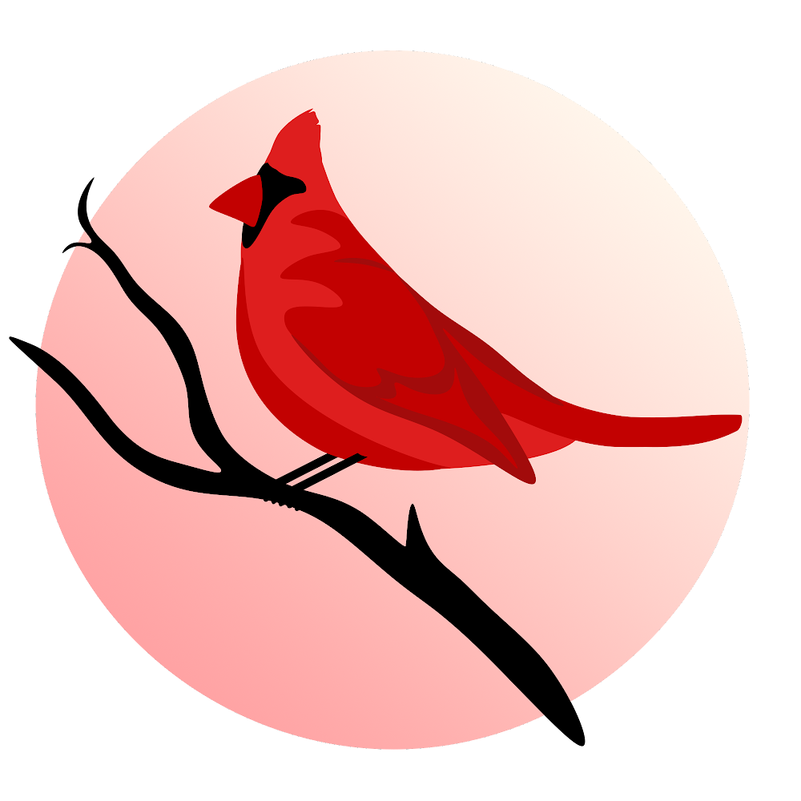
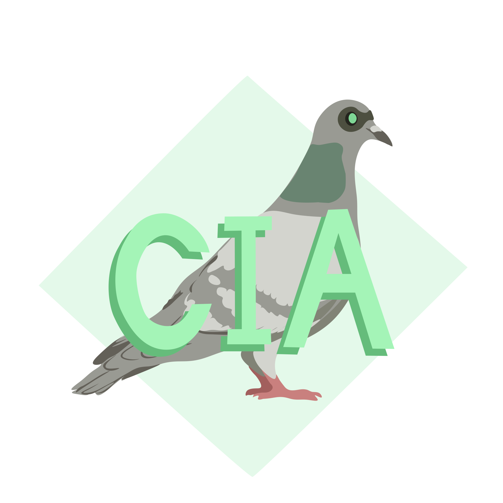
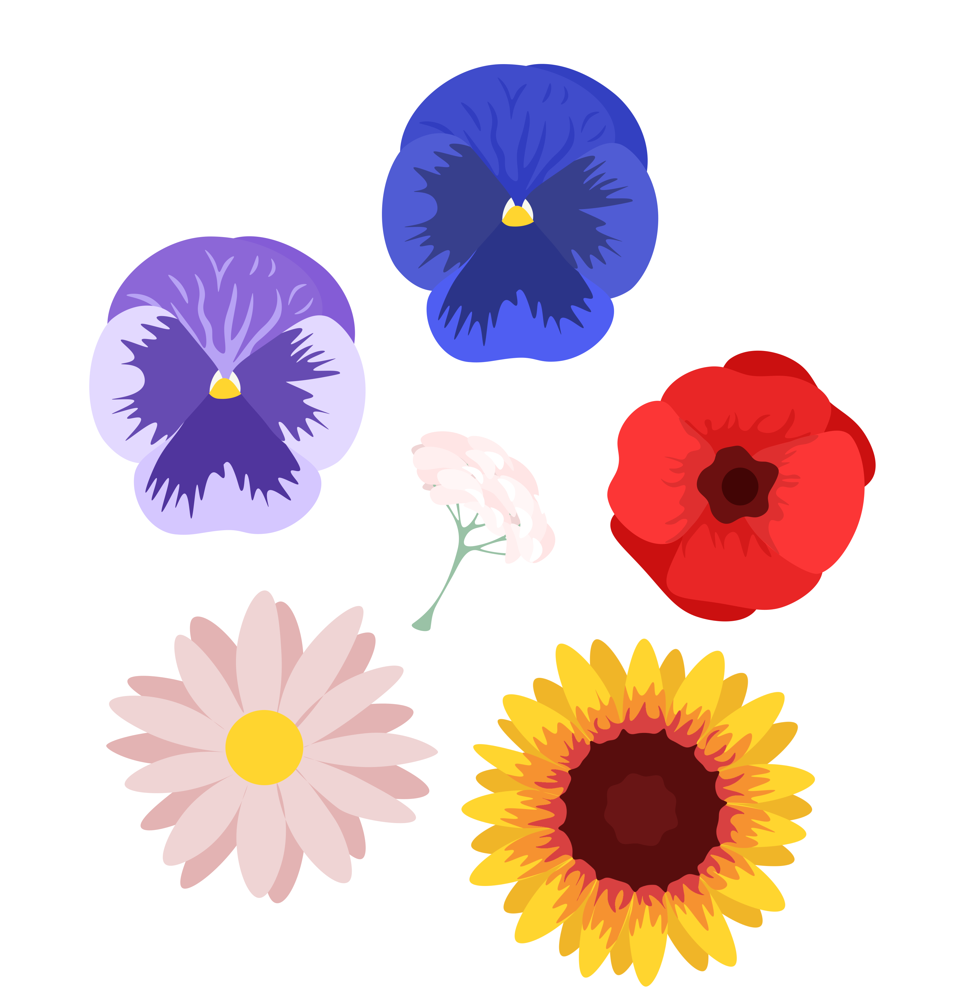
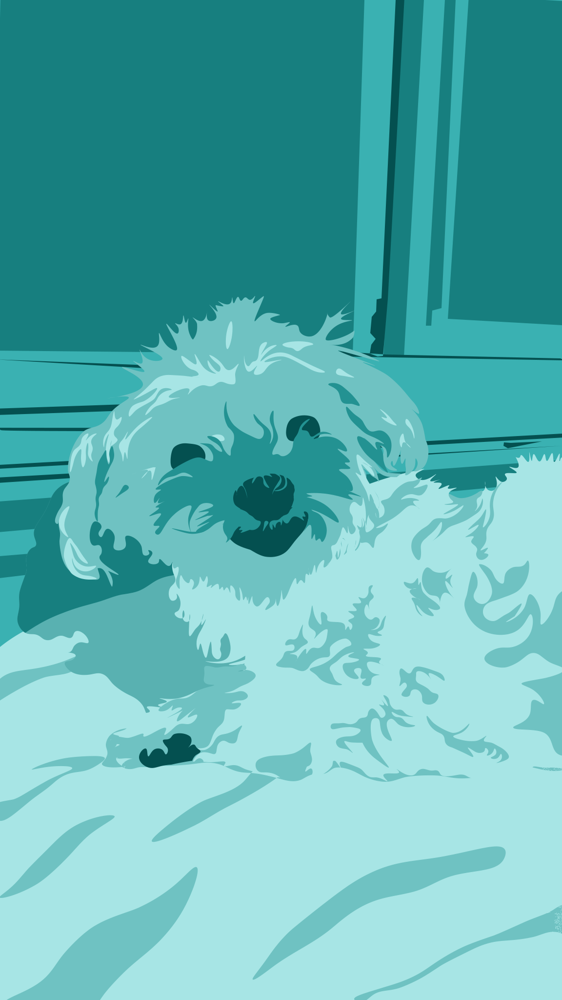
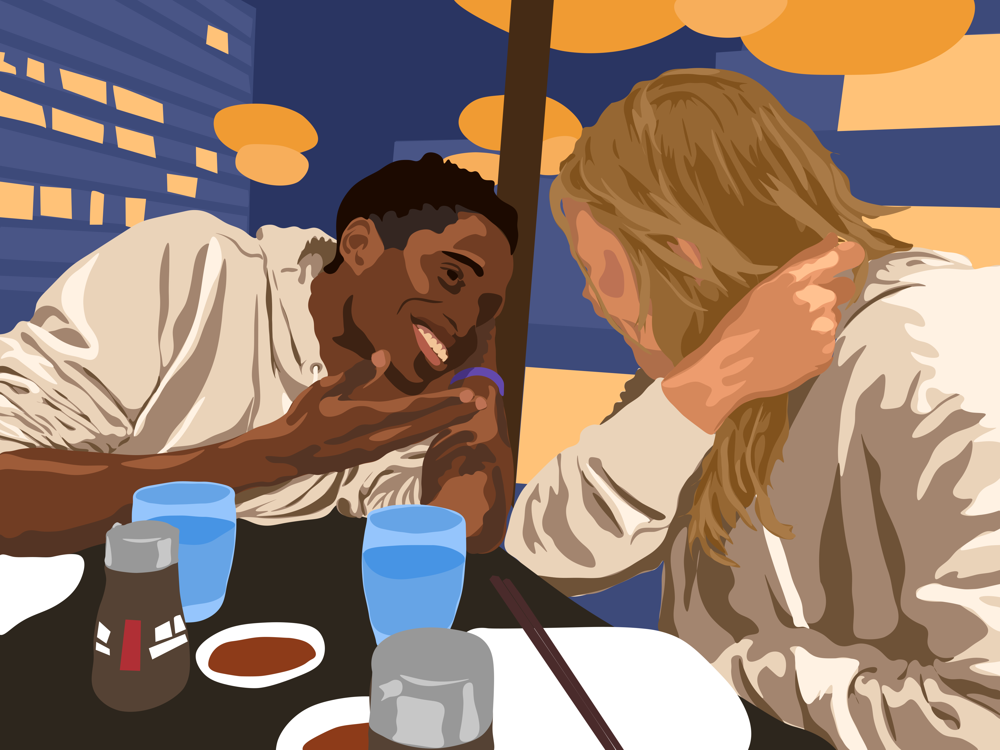
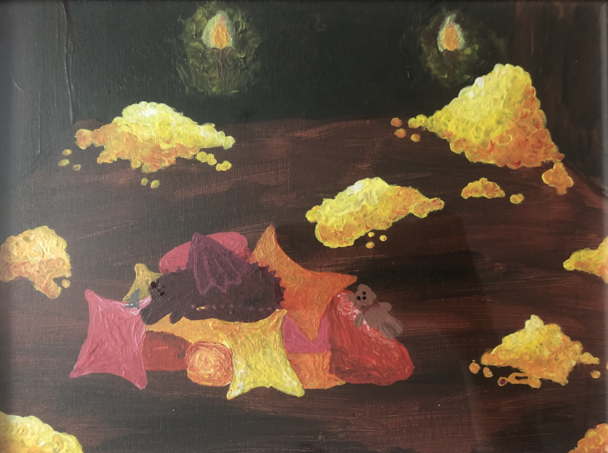
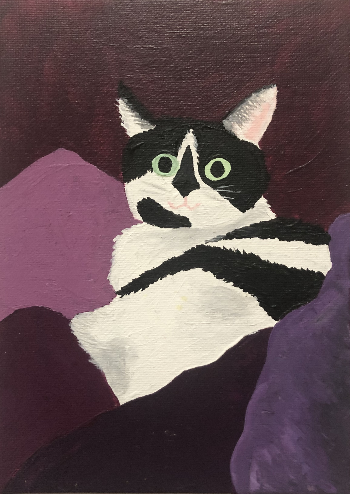
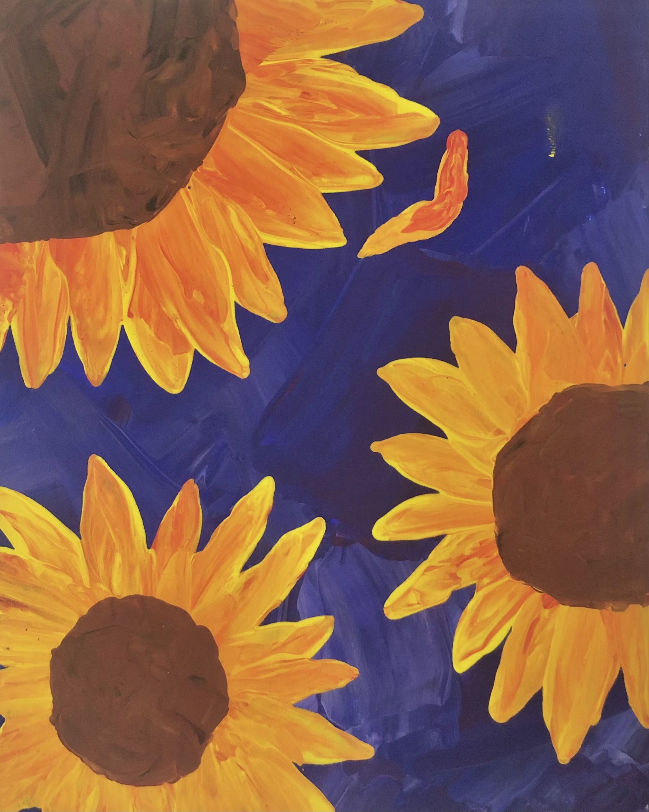
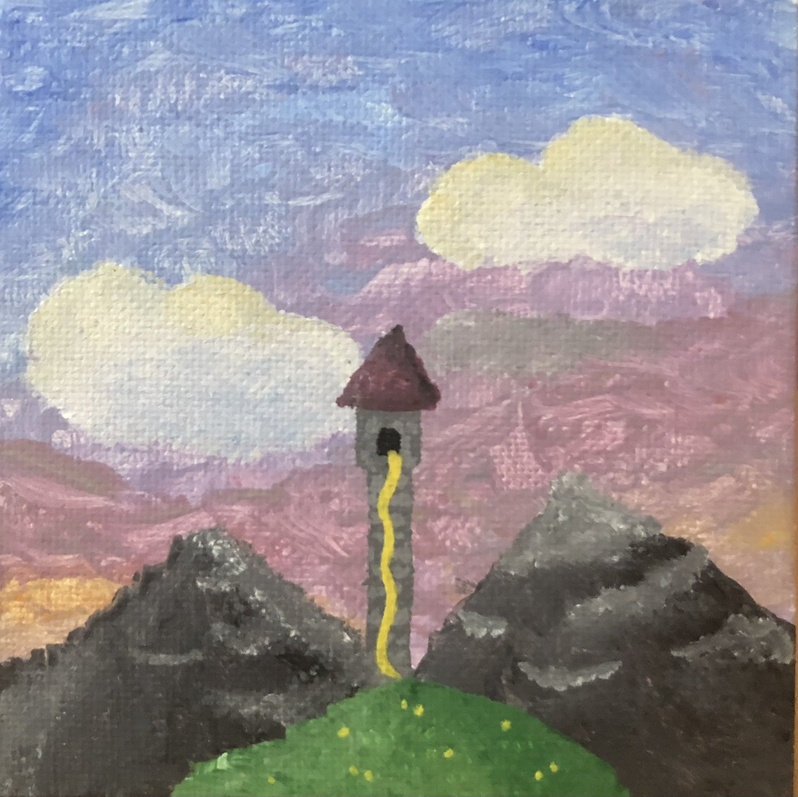
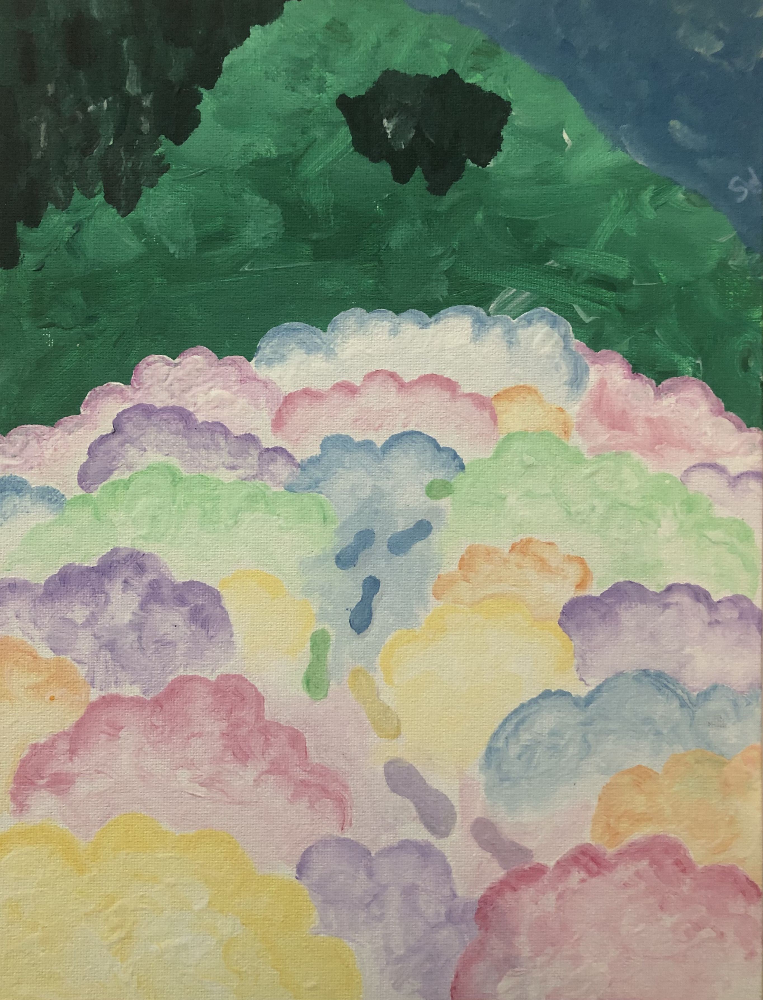

A monochromatic red vector drawing of a cardinal made in photoshop

A photoshop vector drawing of a logo for the CIA

A photoshop vector drawing of a collection of flowers
Whole Compositions

A monochromatic turquoise photoshop vector drawing of the artist's dog

A photoshop vector drawing of the artist's sister at dinner with her partnerBallona Creek Bike path - Acrylic on CanvasJoshua Tree at Dusk - Acrylic on Canvas

Baby dragon at nap time - Acrylic on Canvas

Maggie, the cat - Acrylic on CanvasMinimalist Maggie - Acrylic on Canvas

Sunflowers - Acrylics with a Palette Knife on CanvasVery small cat - Acrylic on CanvasAbstract Cat - Acrylic on Canvas

Rapunzel's Tower - Acrylic on Canvas

Walking on Clouds - Acrylic on Canvas